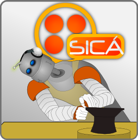
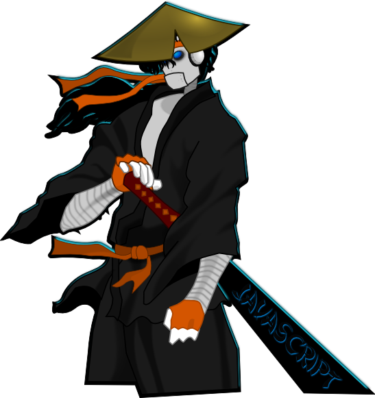

El Chaco Arte Grafica.
Descripción:
El Chaco es el personaje de SICÁ, el cual es un robot que eschucha musica por medio de sus audifonos, este personaje representa la esencia de los que formamos parte de SICÁ, es pues un hacker alguien apasionado por las tecnologias.
El nombre del Chaco refiere se lo agrego @eymard y es del tipo albur, denotando que es una verdura, es pues todo un chaco.
Descarga el proyecto
Download as .tar.gz Download as .zip
Lista de imagenes.
├── avatar-el-chaco-orfebre-del-web.svg
├── banner_pagina_principal.svg
├── disenio.svg
├── jugado-futball-americano.svg
├── master-jedi.svg
├── modo-el-pensador.svg
├── ninja-corriendo.svg
├── ninja-katana.svg
├── orfebre-del-web.svg
├── party.svg
├── samurai_javascript.png
├── samurai_javascript.svg
├── samurai.svg
├── valores-esfuerzo.svg
├── valores-libertad-slide.svg
└── valores-libertad.svg
¿Donde puedo obtener las actualizaciones de este proyecto?
https://github.com/mundoSICA/el_chaco_arte_grafica/
Licencia:
http://mundosica.com (tm) - 2011 Licenciado bajo: " creativeCommons Attribution-NonCommercial CC BY-NC ".